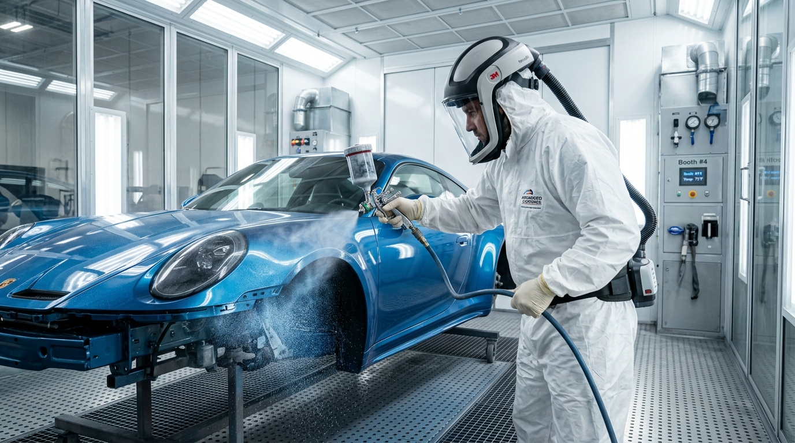
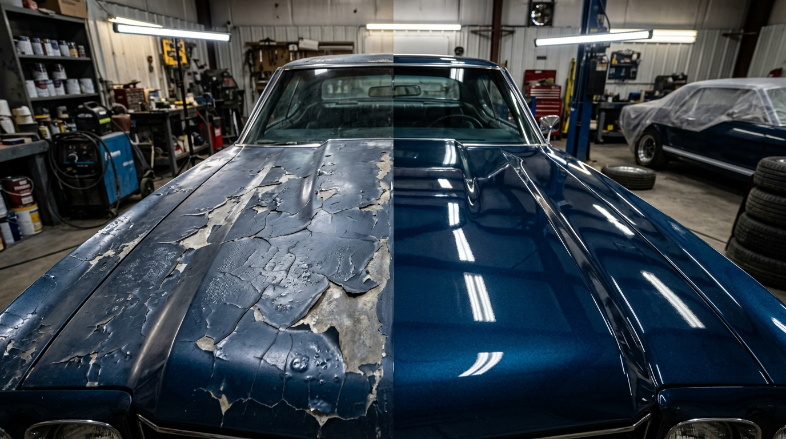
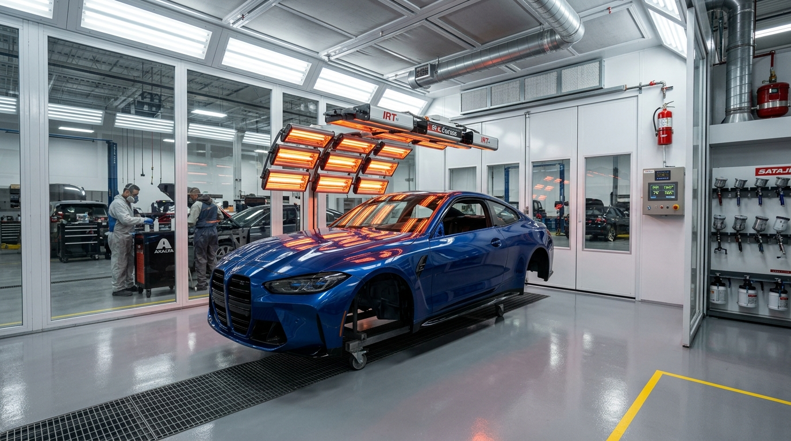
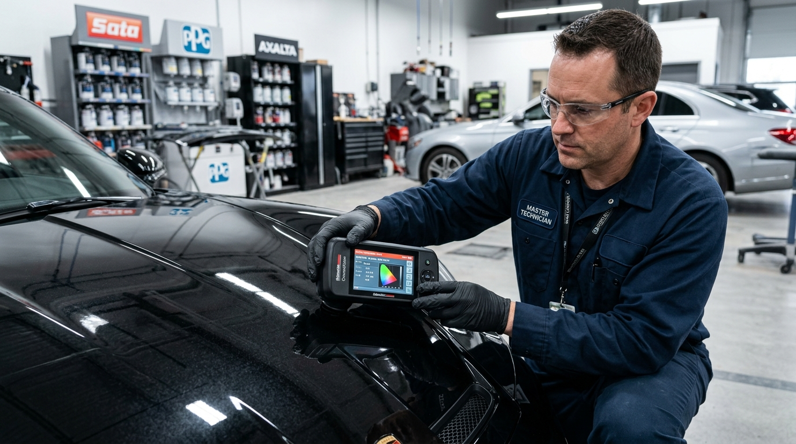

Pintura Automotiva Completa ou Parcial: Qual Escolher para o Seu Carro?
Compare custos, técnicas de difusão de cor (alongamento) e durabilidade entre a pintura de peça isolada e a repintura total em estufa pressurizada.
Ler Artigo Completo ➔Artigos especializados sobre cabine de pintura climatizada e pressurizada, colorimetria computadorizada, vernizes de alto sólido e polimento técnico em Osasco.
Compare custos, técnicas de difusão de cor (alongamento) e durabilidade entre a pintura de peça isolada e a repintura total em estufa pressurizada.
Ler Artigo Completo ➔
Descubra o método dos profissionais de estética automotiva para lavar sem riscar (swirl marks), descontaminar a pintura e proteger o verniz por anos.
Ler Artigo Completo ➔
Identifique os hábitos aparentemente inofensivos que arranham, queimam o verniz e corroem a lataria do seu carro, e veja as correções práticas imediatas.
Ler Artigo Completo ➔
Compare a pintura comercial convencional (banho externo) com o padrão de restauração artesanal até a lata nua com proteção anticorrosiva total.
Ler Artigo Completo ➔
Descubra por que a integridade visual da pintura impede desvalorizações de até 25% na mesa de negociação e laudos cautelares.
Ler Artigo Completo ➔
Conheça a ciência das pistolas HVLP, fluxo descendente em estufa pressurizada e cura térmica por infravermelho de ondas curtas.
Ler Artigo Completo ➔
Entenda por que repinturas amadoras causam descascamento, olhos de peixe e marcas de lixa que triplicam o custo final de retrabalho.
Ler Artigo Completo ➔
Veja como resinas nobres de alto sólidos e a cura termodinâmica a 60°C eliminam a poeira e blindam o acabamento com garantia de fábrica.
Ler Artigo Completo ➔
A leitura óptica com espectrofotômetro multiangular calcula a oxidação e pigmentos micas para eliminar o efeito bicolor nas peças reparadas.
Ler Artigo Completo ➔
A engenharia das quatro camadas de pintura que funcionam como escudo galvânico e polimérico contra ferrugem, raios UV e chuva ácida.
Ler Artigo Completo ➔Cabine pressurizada com cura térmica a 60°C, colorimetria digital e vernizes PU de alto sólidos.
Correção de verniz, remoção de micro-riscos e proteção hidrofóbica de longa duração.
Reparo localizado de arranhões em quinas de portas e para-lamas com entrega ágil e transição invisível.
Envie fotos dos detalhes da pintura pelo WhatsApp da FG Car. Nossa equipe realiza a colorimetria computadorizada e passa a estimativa na hora!
⚡ Chamar no WhatsApp